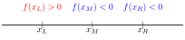

Lecture 13
E21 Computer Engineering Fundamentals
Numerical Methods in Engineering
- Turn engineering problems into mathematical problems
- Turn mathematical problems into computational problems
- Tell a computer how to solve the computational problems
Using numerical methods
Developing numerical methods
Root-finding
Main idea: Solve \(f(x)=0\).
Recall mathematical terminology:
- A root of a function \(f(x)\) is a value of \(x\) at which \(f(x) = 0\).
- A function is a unique mapping (or ‘formula’) that assigns a unique value of \(f(x)\) for any given value of \(x\).
- The inverse mapping is not necessarily unique; two values of \(x\) can have the same value of \(f(x)\).
- Roots vs. solutions: The root of \(f(x)\) is the solution to the equation \(f(x) = 0\)
Finding Roots analytically
i.e., using mathematical analysis.
Q. Find the root(s) of \(f(x) = x^2+x-6\)
\(f(x) = x^2 +3x - 2x - 6\)
\(= (x + 3)(x-2)\)
This equals zero when \(x = -3\) or \(x=2\)
The roots of \(x^2 + 3x - 2x - 6\) are \(\boxed{x=-3}\) and \(\boxed{x=2}\).
When analytical root-finding fails
Mathematical analysis can sometimes fail us engineers, even for very simple equations. For example, the equation
\[\frac{x}{2}-1 = \sin x\]
is difficult to solve exactly
Graphical Techniques
for solving \(\sin x = 0.5\)


Graphical Techniques for more functions
Find a root of the function \[f(x) = 4 \sin x - 4 + x\]


Graphical Solution of equations
Find the solutions to the following equations using the provided paper:
- \(\sin x = 0.7\)
- \(\sin x = 0.72\)
- \(\sin x - 0.7x = 0\)
- \(2 (\sin x + 1) = 0\)
- \(\sin x - x^2 + 1 = 0\)
Finding Roots with a computer
We want to find a root for \[f(x) = x^3 - 10x^2 + 5.\]
Options:
- Try out many different values of \(x\) indiscriminately.
- Try out many different values of \(x\) systematically (in order)
- Try out many different values of \(x\) adaptively — learn from each try
An Incremental Search Algorithm for \(f(x) = x^3 - 10x^2 + 5\)
- Let’s select a \(\Delta x\) with which to search for solutions. Say, \(\Delta x = 0.1\)
- Start from \(x=0\) and move up in increments of \(\Delta x\)
- The value of \(x\) for which \(f(x) \approx 0\) will be our root!
- Write a Python script to print the value of \(f(x)\) for \(x=0, 0.1, 0.2, ..., 1.0\)
import numpy as np
def f1(x):
return x**3 - 10* x**2 + 5
x = np.linspace(0,1,11)
for value in x:
print(f"At x = {value:.3f}, f(x) = {f1(value):.3f}")To apply the function f1 to the array x, we can also do f1(x) directly
Identifying the value closest to zero
min vs. argmin
- The
numpyfunctionminfinds the minimum value of an array. - The
numpyfunctionargminfinds the index of the minimum value of an array. - Recall that
abs()in Python means ‘absolute value of’
import numpy as np
def f1(x):
return x**3 - 10* x**2 + 5
# Array of x-values 0, 0.1, 0.2, ..., 1.0
x = np.linspace(0,1,11)
# Array of f(x) values f(0), f(0.1), ..., f(1.0)
y = f1(x)
# Index of f(x) closest to zero
loczero = np.argmin(abs(y))
# Locate that value of x
answer = x[loczero]
print("Our best estimate of the root of f(x) is")
print(f"x = {answer:.1f}")A better approach …
Let’s look closely at the result of our incremental search.
import numpy as np
def f1(x):
return x**3 - 10* x**2 + 5
x = np.linspace(0,1,11)
for value in x:
print(f"At x = {value:.3f}, f(x) = {f1(value):.3f}")Idea:
- Sign change in \(f(x)\) occurs at root of \(f(x)\)
numpyhas a functionsign()
Bisection Algorithm for \(f(x) = x^3 - 10x^2 + 5\)
The bisection algorithm works by successively bisecting a search space to determine where a sign change in \(f(x)\) occurs.
We know that \(f(x) = 0\) occurs for \(\boxed{0.7 < x < 0.8}\)
Use Python/Numpy to find out whether the root is in the left half of the given interval or its right half.
We have learned that \(f(x)\) changes sign between \(x = 0.7\) and \(x=0.75\).
Conclude that the root is located in the range \(\boxed{0.7 < x < 0.75}\)

Introducing the idea of ‘tolerance’
- In numerical methods, the word ‘tolerance’ is used to denote the window within which you know a desired value.
- We first learned that \(f(x)=0\) somewhere in the range \(x \in (0.7, 0.8)\). The root is known with a tolerance of
0.1. - Next, we saw that \(f(x)=0\) somewhere in the range \(x \in (0.7, 0.75)\). The root is now known with a tolerance of
0.05. - The smaller the tolerance, the better your knowledge.
- Reducing tolerance
- A numerical method usually has a target tolerance. “Good enough!”
- Cannot reduce tolerance indefinitely — floating-point precision limitations such as machine epsilon / gap size eventually crop up
- 64-bit floats — good enough for engineering satisfaction but not good enough for mathematical satisfaction.
- While loops and tolerance
- A typical way to write numerical methods is to enclose one’s algorithm within a block such as
while something > target_tolerance - Keeps running as long as target tolerance is not reached
- Terminates once target tolerance is reached.
- A typical way to write numerical methods is to enclose one’s algorithm within a block such as
An algorithm for bisection
Write a Python program that performs bisection three times
At the end of this process, we know that the root is located somewhere in the interval \[x \in \boxed{(0.725, 0.7375)}\]
- We can choose to state this as \(x_{\text{root}} = 0.73125 \pm 0.00625\)
Convergence rates
- At each subsequent bisection step, the bisection window is halved.